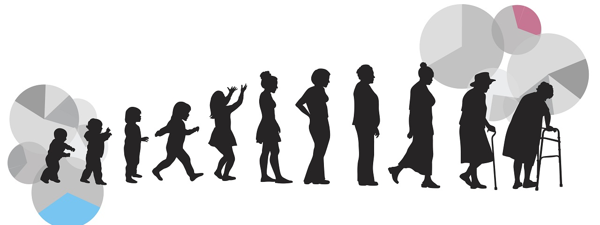
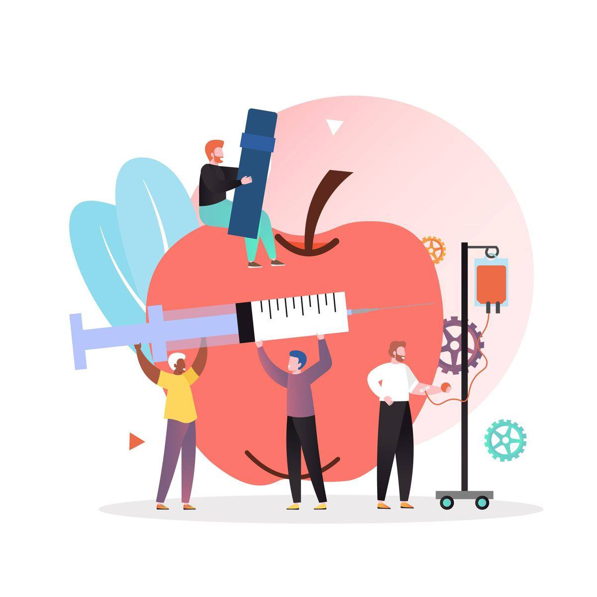

Projects
Welcome to my Projects section — a curated showcase of real-world problems I’ve tackled using data. From interactive dashboards to statistical modeling and client reports, these projects reflect my passion for translating messy data into powerful insights. Click through to explore my work in sports analytics, public health, business intelligence, and more.
Explore team and player dynamics from the 2021–2022 season through an interactive dashboard built in R Shiny. A data-driven look at the league like you’ve never seen before.

Dive into the shifting landscape of U.S. mortality from 1999 to 2017—revealing patterns, disparities, and leading causes of death through rich R-powered visualizations.
What drives great student evaluations? This project explores how faculty performance and student behaviors shape course ratings—using real classroom data and mixed-effects modeling.

Can we predict diabetes before symptoms arise? This project compares machine learning models to find the most accurate approach for early detection based on biometric and demographic patterns.
Same city. Same laws. Different realities. This project uncovers unsettling patterns in how race and class may influence police search decisions during traffic stops in Louisville.
How effective are natural compounds in reducing fungal virulence? This study models the impact of Aloe-derived treatments on Candida albicans morphology using quasi-Poisson regression and hypothesis testing.
Is winter vanishing before our eyes? This project dives deep into five decades of Great Lakes ice data to uncover unsettling trends—what we found might change how you think about climate change in North America.
View Project
Three compact projects—three windows into real-world data. From predicting customer churn, to comparing blood pressure drugs, to estimating Miami University's commuting emissions, this trio shows how data science solves problems big and small.